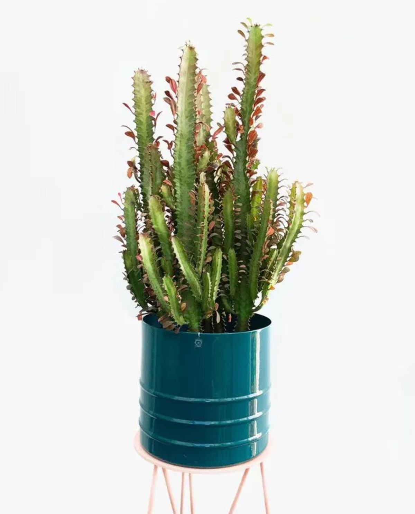

Cacto Candelabro


Nome científico:
Euphorbia trigona
Rega:
2x a 3x por semana. Mantenha a terra sempre úmida, nunca encharcada. Aproveite para fazer do substrato um aliado nessa questão. Use uma mistura de terra vegetal, húmus e areia para plantá-la. Assim você garante um bom escoamento do excesso de água e oferece um substrato rico em matéria orgânica.
Iluminação:
Sol pleno. Se o cantinho escolhido para a sua planta receber o sol forte do meio dia, 3h diárias de exposição costumam bastar. Já se a luz da manhã, antes das 9h ou depois das 16h, predominar por aí, considere pelo menos 4h diárias.